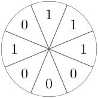
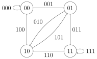

OI Wiki · prijevod · Teorija grafovaOI Wiki · translation · Graph theory
Eulerovi grafoviEulerian graphs
Sadržaj
Ova stranica kratko predstavlja pojam Eulerova grafa, implementaciju i primjene.
Definicija
U ovom tekstu razmatramo samo konačne grafove.
U teoriji grafova Eulerov put (Eulerian path) jest put koji prolazi svakim bridom grafa točno jednom, a Eulerov ciklus (Eulerian circuit) jest zatvoreni put koji prolazi svakim bridom grafa točno jednom. Ako u grafu postoji Eulerov ciklus, graf se zove Eulerov graf (Eulerian graph); ako u grafu ne postoji Eulerov ciklus, ali postoji Eulerov put, graf se zove polu-Eulerov graf (semi-Eulerian graph).
Upozorenje
Iako se u ovoj definiciji koristi riječ „put”, strogo govoreći ovdje se radi o pojmu „staza (trail)”. Eulerov put i Eulerov ciklus smiju svaki brid upotrijebiti točno jednom, ali ne ograničavaju koliko se puta prolazi kroz vrhove.
Svojstva
U nastavku pretpostavljamo da promatrani graf \(G\) nema izoliranih vrhova. Ta pretpostavka ne umanjuje općenitost, jer za graf \(G\) s izoliranim vrhovima sljedeća svojstva i dalje vrijede za graf \(G'\) dobiven uklanjanjem izoliranih vrhova iz \(G\).
Za povezan graf \(G\) sljedeća su tri svojstva međusobno ekvivalentna:
- \(G\) je Eulerov graf;
- svi vrhovi grafa \(G\) imaju paran stupanj (za usmjereni graf: ulazni stupanj svakog vrha jednak je izlaznom);
- \(G\) se može rastaviti na uniju nekoliko bridno disjunktnih ciklusa.
Dokažimo ekvivalenciju.
Ako je graf \(G\) Eulerov, tada svi vrhovi grafa \(G\) imaju paran stupanj: krenemo li iz bilo kojeg vrha duž Eulerova ciklusa, stupanj svakog vrha \(v\) jednak je broju izlazaka iz \(v\) plus broj dolazaka u \(v\). Budući da je prijeđena trajektorija zatvorena, za svaki vrh \(v\) broj izlazaka jednak je broju dolazaka. Dakle stupanj svakog vrha ima oblik \(2k\), tj. paran je. Posebno, za usmjerene grafove istim se dokazom dobiva da je ulazni stupanj svakog vrha jednak izlaznom.
Ako svi vrhovi grafa imaju paran stupanj (ili jednak ulazni i izlazni stupanj), tada se \(G\) može rastaviti na disjunktnu uniju nekoliko bridno disjunktnih ciklusa: krenimo iz bilo kojeg vrha \(u\), odaberimo bilo koji izlazni brid \((u, v)\), prijeđimo u susjedni vrh \(v\) i obrišimo \((u, v)\), i tako sve dok se ne vratimo u početni vrh \(u\). Može se dokazati da se taj postupak nužno vraća u \(u\): kad god stignemo u novi vrh \(v \neq u\), prema prethodnom svojstvu preostali stupanj tog vrha je neparan, pa nužno postoji izlazni brid i postupak ne staje u \(v\). (Drugim riječima, postupak staje onda i samo onda kad se vratimo u \(u\).) Kako je broj bridova grafa \(G\) konačan, postupak nužno staje nakon konačno mnogo koraka, pa se na kraju nužno vraćamo u \(u\) i dobivamo ciklus. Primijetimo da smo u ovom dokazu koristili samo parnost stupnjeva, a nakon pronalaska i brisanja jednog ciklusa preostali graf i dalje ima to svojstvo, pa postupak možemo ponavljati dok graf ne postane prazan, čime \(G\) rastavljamo na nekoliko bridno disjunktnih ciklusa. Štoviše, svaki se takav zatvoreni put može u vrhovima kroz koje prolazi više puta rastaviti na disjunktnu uniju jednostavnih ciklusa, pa se u gornjem svojstvu zatvoreni putovi mogu zamijeniti jednostavnim ciklusima.
Ako se povezan graf \(G\) može rastaviti na disjunktnu uniju nekoliko bridno disjunktnih ciklusa, tada je \(G\) Eulerov graf: iz skupa bridno disjunktnih ciklusa svaki put odaberemo dva koja imaju zajednički vrh i spojimo ih u jedan, i to ponavljamo dok više nema dvaju ciklusa sa zajedničkim vrhom. Može se dokazati da na kraju tog postupka preostaje točno jedan ciklus. Za bilo koja dva bridno disjunktna ciklusa \(P_1, P_2\): ako \(P_1\) i \(P_2\) imaju zajednički vrh, spajamo ih izravno u njemu; inače uzmemo bilo koji vrh \(v_1\) na \(P_1\) i vrh \(v_2\) na \(P_2\); zbog povezanosti grafa \(G\) postoji put \(e_1, e_2, \ldots, e_k\) koji spaja \(v_1\) i \(v_2\), a svaki njegov brid \(e_i\) sadržan je u nekom ciklusu \(C_i\), pri čemu \(P_1\) i \(C_1\), \(C_i\) i \(C_{i+1}\), te \(C_k\) i \(P_2\) imaju zajedničke vrhove (ili je \(C_i = C_{i+1}\), što ne utječe na dokaz). U tom se slučaju \(P_1\) i \(P_2\) mogu spojiti preko \(C_1, \ldots, C_k\). Dakle, bilo koja dva ciklusa mogu se spojiti, pa na kraju nužno ostaje jedinstveni ciklus čiji je skup bridova unija svih bridno disjunktnih ciklusa, tj. \(E(G)\); taj je ciklus Eulerov ciklus u \(G\), pa je \(G\) Eulerov graf.
Gornja svojstva ujedno su i kriterij za prepoznavanje Eulerovih grafova. Konkretno, graf je Eulerov ako i samo ako su vrhovi nenultog stupnja međusobno (jako) povezani i svi vrhovi imaju paran stupanj (ili jednak ulazni i izlazni stupanj).
Svojstva polu-Eulerovih grafova slična su svojstvima Eulerovih: polu-Eulerov graf ima točno dva vrha neparnog stupnja i upravo su to krajevi Eulerova puta. Spajanjem tih dvaju vrhova polu-Eulerov graf postaje Eulerov. Brisanjem bilo kojeg brida Eulerova grafa dobiva se polu-Eulerov graf. Odatle slijedi kriterij za polu-Eulerove grafove: graf je polu-Eulerov ako i samo ako su vrhovi nenultog stupnja međusobno (jako) povezani i postoje točno dva vrha neparnog stupnja. Za usmjerene grafove drugi uvjet glasi: postoje točno dva vrha \(u, v\) takva da \(\deg^+(u) - \deg^-(u) = 1, \deg^+(v) - \deg^-(v) = -1\), a svi ostali vrhovi imaju jednak ulazni i izlazni stupanj.
Konstrukcija Eulerova ciklusa/puta
Ovdje opisujemo najčešće korišten Hierholzerov algoritam, čija je ključna ideja treće od gornjih svojstava Eulerovih grafova: Eulerov graf može se rastaviti na uniju nekoliko bridno disjunktnih ciklusa. Primijetimo da je u gornjem dokazu već opisan potpun i izvediv postupak spajanja bridno disjunktnih ciklusa u Eulerov ciklus, a uz prikladne strukture podataka (npr. pohranu ciklusa u strukturi nalik na povezanu listu) implementacija nije teška.
Konkretno, algoritam najprije u grafu nađe jedan ciklus kao trenutni ciklus; zatim svaki put odabere vrh trenutnog ciklusa s preostalim stupnjem različitim od nule, iz njega nađe novi jednostavan ciklus i spoji ga s trenutnim ciklusom; to ponavlja dok svi vrhovi trenutnog ciklusa ne budu bez preostalog stupnja, a trenutni je ciklus tada Eulerov ciklus.
Algoritam radi i za usmjerene grafove. Za polu-Eulerov graf kao trenutni put uzmemo put između dvaju vrhova neparnog stupnja, zatim svaki put odaberemo vrh nenultog stupnja, nađemo jednostavan ciklus i spojimo ga s trenutnim putom; na kraju dobivamo Eulerov put.
Implementacija
Pseudokod Hierholzerova algoritma:
Analiza vremenske složenosti
Vremenska složenost Hierholzerova algoritma je \(O(|E| + |V|)\).
Primijetimo da u gornjoj analizi ispravnosti traženje jednostavnog ciklusa u Eulerovu ili polu-Eulerovu grafu (ili početnog puta u polu-Eulerovu grafu) ne zahtijeva vraćanje (backtracking): dovoljno je stalno ići preostalim bridovima i traženi ciklus ili put sigurno ćemo naći, pri čemu se svaki brid posjeti samo jednom. Da bismo to iskoristili, bridove grafa treba pohraniti u strukturi nalik na povezanu listu, npr. listama susjedstva ili ulančanim listama bridova (linked forward star), kako bismo svaki brid odmah nakon posjeta obrisali. Koristi li se obična matrica susjedstva, svako traženje brida košta \(O(|V|)\), pa je ukupna složenost \(O(|V||E|)\).
Napomena
Zapravo bi točna složenost ovog algoritma trebala biti \(O(|E|)\), a ne \(O(|V| + |E|)\), jer se algoritam može implementirati tako da ovisi samo o bridovima, a ne o vrhovima: održavanjem zajedničke povezane liste preostalih bridova iz koje se traži sljedeći ciklus.
Ako treba ispisati leksikografski najmanji Eulerov put ili ciklus, bridove treba sortirati, pa je vremenska složenost \(\Theta(|E|\log |E|)\) ili \(\Theta(|E|)\) (uz counting sort ili radix sort).
Primjene
Usmjereni Eulerovi grafovi mogu se upotrijebiti za računalno dekodiranje.
Neka je zadano \(m\) slova; želimo konstruirati kružni disk s \(m^n\) sektora, u svaki upisati jedno slovo, tako da svakih \(n\) uzastopnih pozicija na disku odgovara nizu znakova duljine \(n\). Nakon punog okreta (\(m^n\) koraka) dobivamo \(m^n\) međusobno različitih nizova duljine \(n\) nad \(m\) slova.

Konstruiramo sljedeći usmjereni Eulerov graf:
Neka je \(S = \{a_1, a_2, \cdots, a_m\}\); konstruiramo \(D=\langle V, E\rangle\) ovako:
\(V = \{a_{i_1}a_{i_2}\cdots a_{i_{n-1}} |a_i \in S, 1 \leq i \leq n - 1 \}\)
\(E = \{a_{j_1}a_{j_2}\cdots a_{j_{n-1}}|a_j \in S, 1 \leq j \leq n\}\)
Incidenciju vrhova i bridova u \(D\) definiramo ovako:
iz vrha \(a_{i_1}a_{i_2}\cdots a_{i_{n-1}}\) izlazi \(m\) bridova: \(a_{i_1}a_{i_2}\cdots a_{i_{n-1}}a_r, r=1, 2, \cdots, m\);
brid \(a_{j_1}a_{j_2}\cdots a_{j_{n-1}}\) ulazi u vrh \(a_{j_2}a_{j_3}\cdots a_{j_{n}}\).

Takav je \(D\) povezan i svakom je vrhu ulazni stupanj jednak izlaznom (oba su \(m\)), pa je \(D\) usmjereni Eulerov graf.
Nađemo bilo koji Eulerov ciklus \(C\) u \(D\), uzmemo posljednje slovo svakog brida u \(C\) i ta slova, redom kojim se bridovi pojavljuju u \(C\), upišemo kružno na disk.
Primjer zadatka
Luogu P2731 Jahanje uz popravak ograde
Zadan je neusmjereni graf s 500 vrhova; nađi u njemu Eulerov put ili Eulerov ciklus. Ako ima više rješenja, ispiši najmanje.
U ovom zadatku Eulerov put ili ciklus ne mora proći kroz sve vrhove.
Broj bridova m zadovoljava \(1\leq m \leq 1024\).
Ideja rješenja
Zadatak je izravna primjena Hierholzerova algoritma.
Za spremanje odgovora može se koristiti std::stack<int>, jer ako nađeno nije ciklus, taj dio mora doći na kraj.
Pazi: graf se ne smije pohraniti matricom susjedstva, inače se vremenska složenost pogoršava na \(\Theta(nm)\). Budući da bridove treba sortirati, preporučuje se pohrana ulančanim listama bridova (forward star) ili std::vector. Primjer koda koristi std::vector.
Primjer koda
#include <algorithm>
#include <iostream>
#include <stack>
#include <vector>
using namespace std;
struct edge {
int to;
bool exists;
int revref;
bool operator<(const edge& b) const { return to < b.to; }
};
vector<edge> beg[505];
int cnt[505];
constexpr int dn = 500;
stack<int> ans;
void Hierholzer(int x) { // ključna funkcija
for (int& i = cnt[x]; i < (int)beg[x].size();) {
if (beg[x][i].exists) {
edge e = beg[x][i];
beg[x][i].exists = beg[e.to][e.revref].exists = false;
++i;
Hierholzer(e.to);
} else {
++i;
}
}
ans.push(x);
}
int deg[505];
int reftop[505];
int main() {
cin.tie(nullptr)->sync_with_stdio(false);
for (int i = 1; i <= dn; ++i) {
beg[i].reserve(1050); // reserve na vectoru izbjegava dinamičke realokacije i ubrzava program
}
int m;
cin >> m;
for (int i = 1; i <= m; ++i) {
int a, b;
cin >> a >> b;
beg[a].push_back(edge{b, true, 0});
beg[b].push_back(edge{a, true, 0});
++deg[a];
++deg[b];
}
for (int i = 1; i <= dn; ++i) {
if (!beg[i].empty()) {
sort(beg[i].begin(), beg[i].end()); // za pohlepni odabir po leksikografskom poretku moramo sortirati
}
}
for (int i = 1; i <= dn; ++i) {
for (int j = 0; j < (int)beg[i].size(); ++j) {
beg[i][j].revref = reftop[beg[i][j].to]++;
}
}
int bv = 0;
for (int i = 1; i <= dn; ++i) {
if (!deg[bv] && deg[i]) {
bv = i;
} else if (!(deg[bv] & 1) && (deg[i] & 1)) {
bv = i;
}
}
Hierholzer(bv);
while (!ans.empty()) {
cout << ans.top() << '\n';
ans.pop();
}
}
Zadaci
Contents
This page briefly introduces the concept of Eulerian graphs, their implementation and applications.
Definition
Only finite graphs are discussed in this article.
In graph theory, an Eulerian path is a path that traverses every edge of the graph exactly once, and an Eulerian circuit is a closed path that traverses every edge of the graph exactly once. If a graph has an Eulerian circuit, it is called an Eulerian graph; if a graph has no Eulerian circuit but has an Eulerian path, it is called a semi-Eulerian graph.
Warning
Although the word "path" is used in this definition, strictly speaking the concept used here is a "trail". An Eulerian path or circuit may use every edge exactly once, but places no restriction on how often vertices are visited.
Properties
Below we assume that the graph \(G\) under discussion has no isolated vertices. This assumption loses no generality, because for a graph \(G\) with isolated vertices the following properties still hold for the graph \(G'\) obtained from \(G\) by deleting the isolated vertices.
For a connected graph \(G\), the following three properties are equivalent:
- \(G\) is an Eulerian graph;
- every vertex of \(G\) has even degree (for directed graphs, the in-degree of every vertex equals its out-degree);
- \(G\) can be decomposed into a union of several edge-disjoint circuits.
We now prove the equivalence.
If a graph \(G\) is Eulerian, then every vertex of \(G\) has even degree: start at any vertex and walk once around the Eulerian circuit; the degree of every vertex \(v\) equals the number of departures from \(v\) plus the number of arrivals at \(v\). Since the trajectory is a closed walk, for every vertex \(v\) the number of departures equals the number of arrivals. That is, every vertex has degree of the form \(2k\), i.e. even. In particular, for directed graphs the same argument shows that the in-degree of every vertex equals its out-degree.
If every vertex of a graph \(G\) has even degree (or equal in- and out-degree), then it can be decomposed into a disjoint union of several edge-disjoint circuits: start at any vertex \(u\), choose any outgoing edge \((u, v)\), move to the adjacent vertex \(v\) and delete \((u, v)\), and continue until returning to the starting vertex \(u\). One can prove that this process must eventually return to \(u\): whenever we arrive at a new vertex \(v \neq u\), by the previous property its remaining degree is odd, so there must be an outgoing edge and the process does not stop at \(v\). (In other words, the process stops if and only if we return to \(u\).) Since the number of edges in \(G\) is finite, the process must stop after finitely many steps, so we must eventually return to \(u\) and obtain a circuit. Note that in this argument we only used the fact that all degrees are even, and after finding and deleting one circuit the remaining graph still has this property, so we can repeat the process until the remaining graph is empty, thereby splitting \(G\) into several edge-disjoint circuits. Furthermore, every circuit can be split, at the vertices it passes through more than once, into a disjoint union of simple cycles, so the circuits in the property above may be replaced by simple cycles.
If a connected graph \(G\) can be decomposed into a disjoint union of several edge-disjoint circuits, then \(G\) is Eulerian: from a set of edge-disjoint circuits, repeatedly pick two that share a vertex and merge them into one, until no two circuits share a vertex. One can prove that exactly one circuit remains at the end of this process. For any two edge-disjoint circuits \(P_1, P_2\): if \(P_1\) and \(P_2\) share a vertex, merge them directly there; otherwise take any vertex \(v_1\) on \(P_1\) and \(v_2\) on \(P_2\); by the connectivity of \(G\) there is a path \(e_1, e_2, \ldots, e_k\) joining \(v_1\) and \(v_2\), each of whose edges \(e_i\) is contained in some circuit \(C_i\), where \(P_1\) and \(C_1\), \(C_i\) and \(C_{i+1}\), and \(C_k\) and \(P_2\) all share vertices (or \(C_i = C_{i+1}\), which does not affect the proof). In this case \(P_1\) and \(P_2\) can be merged through \(C_1, \ldots, C_k\). That is, any two circuits can be merged, so the remaining circuit is unique, its edge set is the union of all the edge-disjoint circuits, namely \(E(G)\), and this circuit is an Eulerian circuit of \(G\), so \(G\) is Eulerian.
The properties above also form the criterion for recognizing Eulerian graphs. Concretely, a graph is Eulerian if and only if its vertices of nonzero degree are mutually (strongly) connected and all vertices have even degree (or equal in- and out-degree).
Semi-Eulerian graphs have properties similar to Eulerian ones: a semi-Eulerian graph has exactly two vertices of odd degree, and these two vertices are the endpoints of the Eulerian path. Connecting these two vertices turns a semi-Eulerian graph into an Eulerian one. Deleting any edge of an Eulerian graph yields a semi-Eulerian graph. From this we get the criterion for semi-Eulerian graphs: a graph is semi-Eulerian if and only if its vertices of nonzero degree are mutually (strongly) connected and there are exactly two vertices of odd degree. For directed graphs the second condition is: there are exactly two vertices \(u, v\) with \(\deg^+(u) - \deg^-(u) = 1, \deg^+(v) - \deg^-(v) = -1\), and all other vertices have equal in- and out-degree.
Constructing an Eulerian circuit/path
Here we present the most commonly used Hierholzer algorithm, whose core idea is the third of the Eulerian graph properties above: an Eulerian graph can be decomposed into a union of several edge-disjoint circuits. Note that the proof above already describes a complete and feasible procedure for merging edge-disjoint circuits into an Eulerian circuit, and with suitable data structures (e.g. storing cycles in a linked-list-like structure) the implementation is not hard.
Concretely, the algorithm first finds a circuit in the graph as the current circuit; then it repeatedly picks a vertex of the current circuit with nonzero remaining degree, finds a new simple circuit starting there and merges it into the current circuit, until no vertex of the current circuit has remaining degree; the current circuit is then an Eulerian circuit.
The algorithm also works for directed graphs. For a semi-Eulerian graph, take a path joining the two odd-degree vertices as the current path, then repeatedly pick a vertex of nonzero degree, find a simple circuit and merge it into the current path; in the end we obtain an Eulerian path.
Implementation
The pseudocode of Hierholzer's algorithm is as follows:
Time complexity analysis
The time complexity of Hierholzer's algorithm is \(O(|E| + |V|)\).
Note that in the correctness argument above, finding a simple circuit in an Eulerian or semi-Eulerian graph (or the initial path of a semi-Eulerian graph) requires no backtracking: simply keep walking along the remaining edges and the desired circuit or path will be found, and every edge is visited only once. To exploit this, the edges should be stored in a linked-list-like way, such as adjacency lists or a linked forward star, so that every edge can be deleted right after it is visited. If a plain adjacency matrix is used, each edge lookup costs \(O(|V|)\) and the total complexity becomes \(O(|V||E|)\).
Note
In fact the exact complexity of this algorithm should be \(O(|E|)\) rather than \(O(|V| + |E|)\), because the algorithm can be implemented in a way that depends only on the edges and not on the vertices, by maintaining a global linked list of remaining edges from which the next circuit is sought.
If the lexicographically smallest Eulerian path or circuit is required, the edges must be sorted, giving time complexity \(\Theta(|E|\log |E|)\) or \(\Theta(|E|)\) (using counting sort or radix sort).
Applications
Directed Eulerian graphs can be used for computer decoding.
Suppose there are \(m\) letters and we want to build a disk with \(m^n\) sectors, each holding one letter, such that every \(n\) consecutive positions on the disk correspond to a string of length \(n\). After one full rotation (\(m^n\) steps) we obtain \(m^n\) pairwise distinct strings of length \(n\) over the \(m\) letters.
Construct the following directed Eulerian graph:
Let \(S = \{a_1, a_2, \cdots, a_m\}\) and construct \(D=\langle V, E\rangle\) as follows:
\(V = \{a_{i_1}a_{i_2}\cdots a_{i_{n-1}} |a_i \in S, 1 \leq i \leq n - 1 \}\)
\(E = \{a_{j_1}a_{j_2}\cdots a_{j_{n-1}}|a_j \in S, 1 \leq j \leq n\}\)
The incidence between vertices and edges of \(D\) is defined as follows:
the vertex \(a_{i_1}a_{i_2}\cdots a_{i_{n-1}}\) has \(m\) outgoing edges: \(a_{i_1}a_{i_2}\cdots a_{i_{n-1}}a_r, r=1, 2, \cdots, m\);
the edge \(a_{j_1}a_{j_2}\cdots a_{j_{n-1}}\) enters the vertex \(a_{j_2}a_{j_3}\cdots a_{j_{n}}\).
Such a \(D\) is connected and every vertex has in-degree equal to out-degree (both equal to \(m\)), so \(D\) is a directed Eulerian graph.
Take any Eulerian circuit \(C\) of \(D\), take the last letter of each edge in \(C\), and arrange these letters in a circle on the disk in the order in which the edges appear in \(C\).
Example problem
Luogu P2731 Riding the Fences
Given an undirected graph with 500 vertices, find an Eulerian path or Eulerian circuit of the graph. If there are several solutions, output the smallest one.
In this problem the Eulerian path or circuit does not need to pass through all vertices.
The number of edges m satisfies \(1\leq m \leq 1024\).
Solution idea
This problem is a direct application of Hierholzer's algorithm.
The answer can be stored in a std::stack<int>, because if what we find is not a circuit, that part must go at the end.
Note that the graph must not be stored as an adjacency matrix, otherwise the time complexity degrades to \(\Theta(nm)\). Since the edges need to be sorted, a forward star or std::vector is recommended for storing the graph. The sample code uses std::vector.
Sample code
#include <algorithm>
#include <iostream>
#include <stack>
#include <vector>
using namespace std;
struct edge {
int to;
bool exists;
int revref;
bool operator<(const edge& b) const { return to < b.to; }
};
vector<edge> beg[505];
int cnt[505];
constexpr int dn = 500;
stack<int> ans;
void Hierholzer(int x) { // key function
for (int& i = cnt[x]; i < (int)beg[x].size();) {
if (beg[x][i].exists) {
edge e = beg[x][i];
beg[x][i].exists = beg[e.to][e.revref].exists = false;
++i;
Hierholzer(e.to);
} else {
++i;
}
}
ans.push(x);
}
int deg[505];
int reftop[505];
int main() {
cin.tie(nullptr)->sync_with_stdio(false);
for (int i = 1; i <= dn; ++i) {
beg[i].reserve(1050); // reserve on the vector avoids dynamic reallocation and speeds things up
}
int m;
cin >> m;
for (int i = 1; i <= m; ++i) {
int a, b;
cin >> a >> b;
beg[a].push_back(edge{b, true, 0});
beg[b].push_back(edge{a, true, 0});
++deg[a];
++deg[b];
}
for (int i = 1; i <= dn; ++i) {
if (!beg[i].empty()) {
sort(beg[i].begin(), beg[i].end()); // we must sort to pick greedily in lexicographic order
}
}
for (int i = 1; i <= dn; ++i) {
for (int j = 0; j < (int)beg[i].size(); ++j) {
beg[i][j].revref = reftop[beg[i][j].to]++;
}
}
int bv = 0;
for (int i = 1; i <= dn; ++i) {
if (!deg[bv] && deg[i]) {
bv = i;
} else if (!(deg[bv] & 1) && (deg[i] & 1)) {
bv = i;
}
}
Hierholzer(bv);
while (!ans.empty()) {
cout << ans.top() << '\n';
ans.pop();
}
}